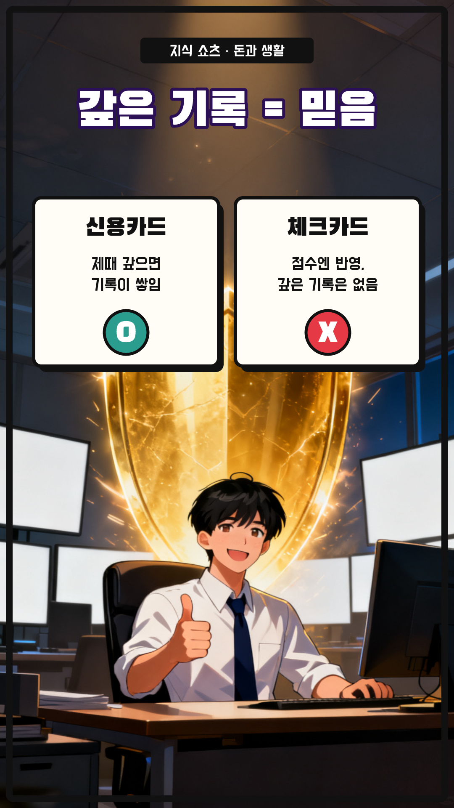
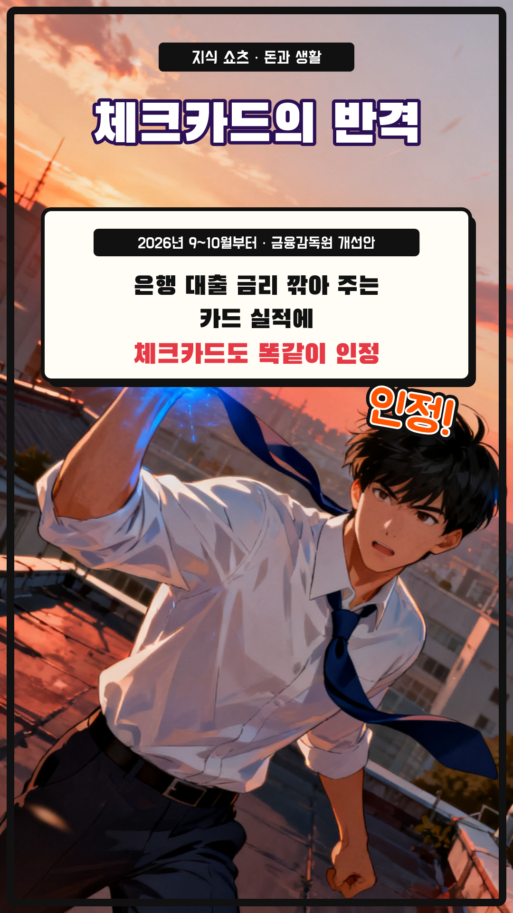
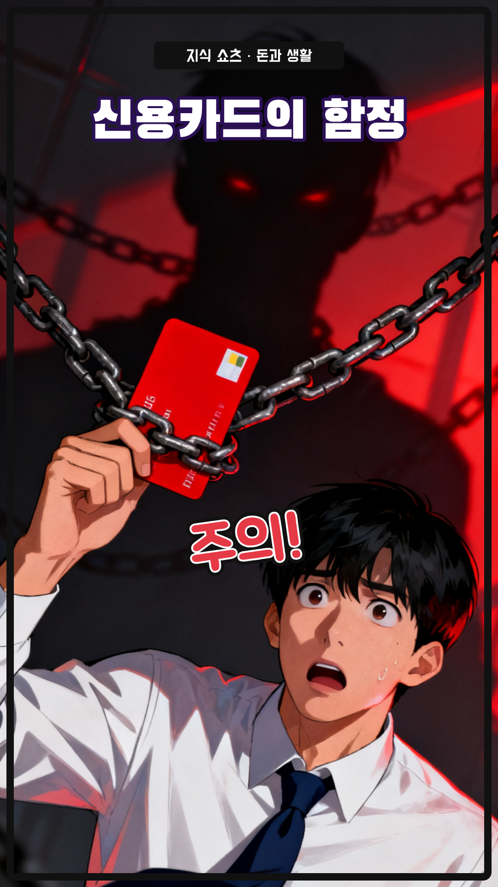
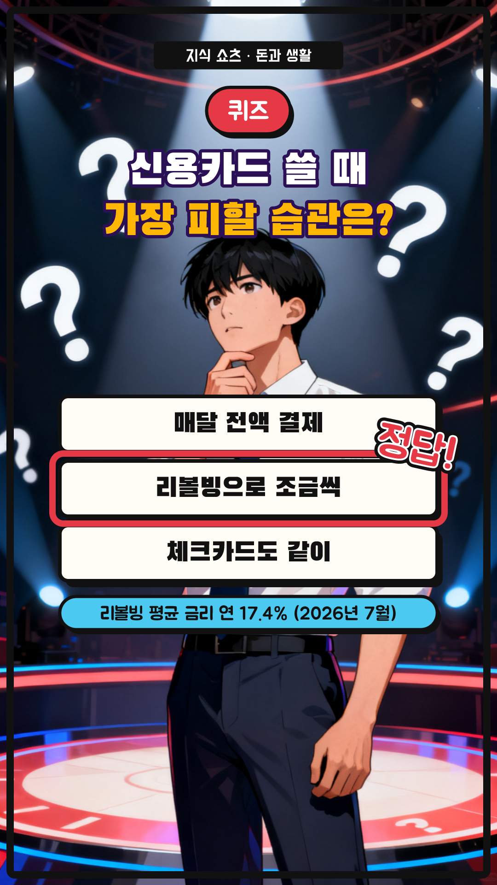
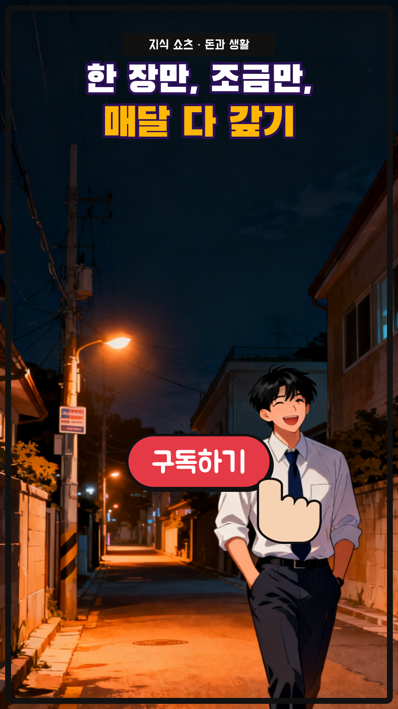

체크카드만 쓰면 손해일까? — 8컷 콘티
49초 (+ 썸네일 1초) · 1080×1920 · 30fps · 자막 카드 y=1480 · 내레이션 ko-KR-Chirp3-HD-Charon · 웹툰풍 액션 세미리얼 AI(Seedream 4.0) + 말풍선 · 효과음
S01
0:00–0:04 · 4.6초
모션
ai 카메라 이동 0.0s, title 팝 0.0s, bubble 팝 0.8s, flip 도장 2.1s
내레이션
체크카드만 쓰면 무조건 이득일까요? / 아껴 쓰기엔 좋지만, 놓치는 게 있어요
S02
0:04–0:10 · 6.0초
모션
ai 카메라 이동 0.0s, title 팝 0.0s, q 팝 0.6s, flow 와이프 → 2.6s
내레이션
신용점수는 빌린 돈을 잘 갚았는지를 봐요 / 신용카드는 먼저 쓰고 다음 달에 갚는 작은 빚이에요

S03
0:10–0:17 · 6.4초
모션
ai 카메라 이동 0.0s, title 팝 0.0s, credit 팝 0.4s, debit 팝 3.1s
내레이션
그래서 제때 갚은 기록이 믿을 만하다는 증거가 돼요 / 체크카드도 점수에 반영되지만, 갚은 기록은 남지 않아요
S04
0:17–0:20 · 3.3000000000000007초
모션
ai 카메라 이동 0.0s, title 팝 0.0s, perks 팝 0.3s, sfx 도장 1.6s
내레이션
할인이나 포인트 적립도 대체로 신용카드가 더 커요

S05
0:20–0:27 · 7.0초
모션
ai 카메라 이동 0.0s, title 팝 0.0s, news 와이프 ↓ 2.8s, sfx 도장 5.0s
내레이션
그런데 체크카드에도 반가운 소식이 있어요 / 이번 가을부터 대출 이자를 깎아 주는 카드 실적에 체크카드도 들어가요

S06
0:27–0:29 · 2.3999999999999986초
모션
ai 카메라 이동 0.0s, title 팝 0.0s, sfx 도장 0.8s
내레이션
단, 신용카드에도 함정이 있어요

S07
0:29–0:39 · 10.000000000000004초
모션
ai 카메라 이동 0.0s, badge 팝 0.0s, question 팝 0.3s, choices 팝 0.9s, answer 도장 4.1s, why 페이드 6.0s
내레이션
퀴즈! 신용카드를 쓸 때 가장 피해야 할 습관은? / 정답은, 리볼빙이에요! / 남은 카드값이 다음 달로 넘어가 연 17%쯤 이자가 붙거든요

S08
0:39–0:49 · 9.299999999999997초
모션
ai 카메라 이동 0.0s, look 팝 0.2s, button 팝 3.9s, finger 탭 4.5s
내레이션
신용카드 한 장, 조금만 쓰고 매달 다 갚는 게 정답이에요 / 더 많은 돈 이야기가 궁금하다면 구독해 주세요